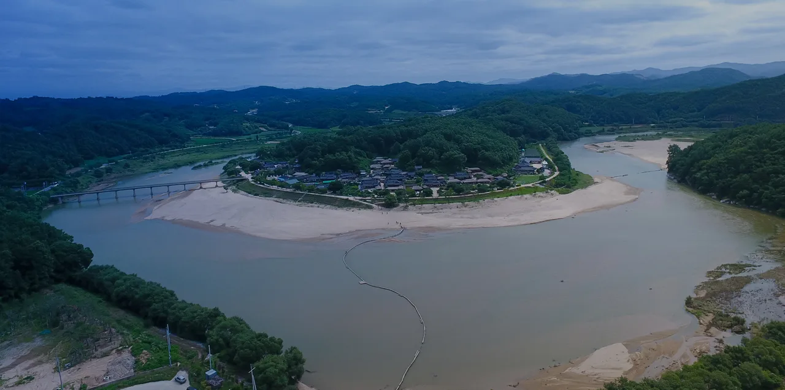
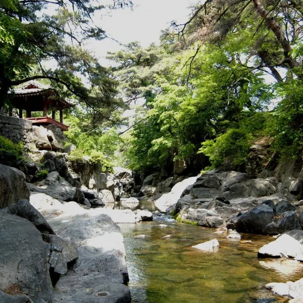
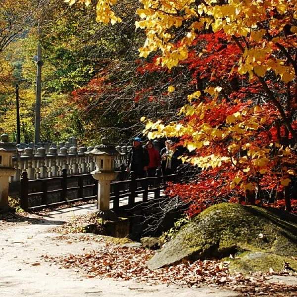
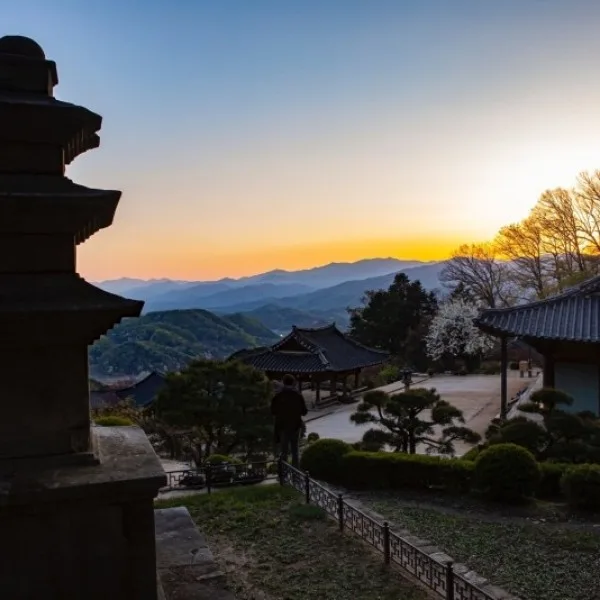

▲ 부석사 무량수전. 국보 제18호이자 부석사의 중심 건물이다 ⓒ 영주시관광협의회
1. 부석사, 국보급인데 무료다
부석사는 입장료가 없습니다. 연중무휴로 개방되고, 별도 매표소를 거치지 않고 경내로 들어갈 수 있습니다.
신라 문무왕 16년(676년) 의상대사가 왕명을 받아 창건했습니다. 중심 건물인 무량수전은 국보 제18호로, 앞면 5칸·옆면 3칸의 팔작지붕 건물입니다. 지금 건물은 고려 우왕 2년(1376년)에 다시 지어진 것으로, 국내에 남은 목조 건축물 가운데 오래된 축에 속합니다.
무량수전을 받치는 배흘림기둥도 유명합니다. 기둥 중간을 굵게 하고 위아래로 갈수록 가늘게 깎아, 기둥이 가늘어 보이는 착시를 막는 전통 기법입니다.

▲ 영주 무섬마을을 휘감아 도는 내성천. 부석사·소수서원과 함께 묶어 다니는 여행자도 많다 ⓒ 영주시관광협의회
2. 소수서원, 통합권 2,000원
부석사와 달리 소수서원 쪽은 요금이 있습니다. 소수서원·소수박물관·선비촌·민속마을을 묶은 통합 관람권 기준으로 어른 2,000원, 청소년 1,330원, 어린이 660원입니다.
| 구분 | 개인 | 단체(20인 이상) |
|---|---|---|
| 어른 | 2,000원 | 1,660원 |
| 청소년 | 1,330원 | 1,000원 |
| 어린이(초등학생) | 660원 | 530원 |
면제 대상도 폭넓습니다. 6세 이하, 65세 이상, 국가유공자, 장애인(중증은 동반 1인 포함), 영주시 우수자원봉사자, 설날·추석 당일 방문자는 무료입니다. 영주시민을 비롯한 다수 동주도시 시민은 50% 감면됩니다.

▲ 소수서원 소나무숲길. 통합 관람권 한 장으로 이 길과 선비촌까지 함께 돌아볼 수 있다 ⓒ 영주시관광협의회
3. 계절마다 다른 관람 시간
소수서원 쪽은 연중무휴지만, 계절에 따라 관람 시간이 다릅니다. 봄·가을(3~5월, 9~10월)은 오전 9시부터 오후 6시까지, 여름(6~8월)은 오후 7시까지, 겨울(11~2월)은 오후 5시까지입니다. 입장은 관람 종료 1시간 전까지만 가능합니다.

▲ 가을 소수서원. 단풍철에는 관람 마감 시각이 여름보다 두 시간 이른 오후 6시다 ⓒ 영주시관광협의회
4. 두 곳을 하루에 묶는다면
부석사와 소수서원은 차로 약 20분 거리입니다. 국보급 문화재를 무료로 보고 나서, 요금이 붙는 소수서원·선비촌으로 넘어가는 순서가 자연스럽습니다.

▲ 부석사 안양루 앞에서 내려다본 소백산맥 능선. 해질녘 풍경으로 특히 알려져 있다 ⓒ 영주시관광협의회
5. 자차 여행자를 위한 정리
첫째, 부석사는 매표소 걱정 없이 그대로 들어가면 됩니다. 국보급 사찰이라고 요금이 있을 거라 넘겨짚을 필요가 없습니다.
둘째, 소수서원 쪽은 통합 관람권 한 장으로 4곳을 봅니다. 소수서원·소수박물관·선비촌·민속마을을 따로 끊을 필요가 없습니다.
셋째, 계절별 마감 시각을 확인하십시오. 겨울에는 여름보다 두 시간 일찍 문을 닫습니다.
넷째, 면제·감면 대상이 넓으니 해당 여부를 먼저 확인하십시오. 영주시민이 아니어도 동주도시 시민이면 절반 값입니다.
정리하면 이렇습니다. 영주에서는 값이 붙는 곳과 붙지 않는 곳이 직관과 반대로 갈립니다. 국보가 있는 부석사가 무료이고, 오히려 소수서원 쪽에 요금표가 있다는 사실만 기억해 두면 됩니다.